Immunofluorescence and confocal microscopy
Fluorescent antibodies light up emerin in green, EZH2 or G9a in red, and DNA in blue. Proteins that work together should overlap.
Biomedical research poster
Genes near the edge of the nucleus tend to stay switched off. Emerin, a nuclear envelope protein that is lost in one form of muscular dystrophy, anchors that silent DNA in place. This project asked whether emerin does its job by partnering directly with two gene-silencing enzymes, EZH2 and G9a.
About this page
This page presents the research poster in an accessible format, pairing plain-language explanations of the background, methods and findings with the original microscopy and western blot data. The complete poster appears at the end.
Background
Each human cell packs about two meters of DNA into a nucleus roughly a hundredth of a millimeter across. Placement inside that space matters. Stretches of DNA held against the nuclear envelope are usually packed tight and kept silent, while genes in the interior stay open and active.
Emerin sits in the inner membrane of the envelope. It tethers chromatin to the nuclear edge and recruits enzymes that chemically mark histones, the protein spools that DNA wraps around. Those marks control how tightly the DNA is packed. When a muscle precursor cell matures, some genes have to switch on and others off, and emerin is thought to help organize that change.
We hypothesize that dynamic interactions between emerin and histone-modifying enzymes control the repositioning of crucial myogenic genes at the inner nuclear membrane during cellular differentiation.
In plain terms
As muscle precursor cells mature, short-lived contacts between emerin and these enzymes may decide which muscle genes are held silent at the nuclear edge.
Approach
Imaging shows where proteins sit inside the cell. Biochemistry shows which proteins physically stick together. This project used both.
Fluorescent antibodies light up emerin in green, EZH2 or G9a in red, and DNA in blue. Proteins that work together should overlap.
A donut-shaped depletion laser sharpens each spot of light well below the roughly 200 nm limit of a standard light microscope. Imaged on an Abberior STEDYCON.
An antibody against emerin pulls emerin out of a cell extract, along with any protein physically bound to it.
The captured proteins are separated by size in a gel, moved onto a membrane and probed with antibodies for emerin, EZH2 and G9a.
Cell models
A widely used human cell line.
Mouse muscle precursor cells that mature into muscle fibers in culture, sampled as they differentiated.
Findings
Three experiments looked for the partnership in different ways: by eye, at super-resolution, and biochemically.
1Immunofluorescence
Emerin concentrates at the nuclear rim. EZH2 and G9a are spread through the interior of the nucleus. In the merged images the green and red barely meet at the edge, which is exactly where they would overlap if the enzymes were docked on emerin.
EZH2C2C12 cells at 0 h
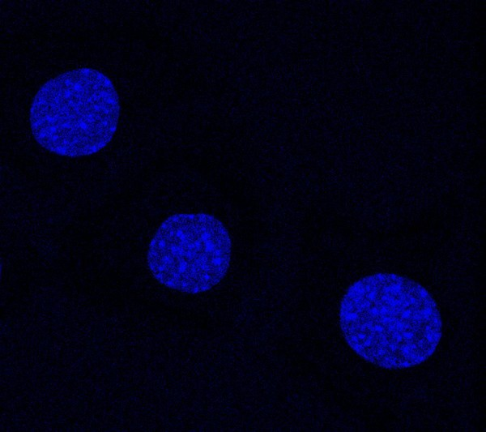
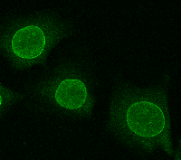
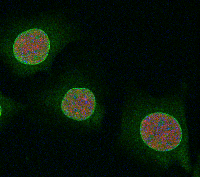
G9aSecond field
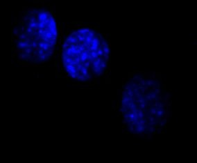
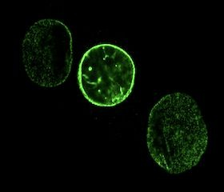
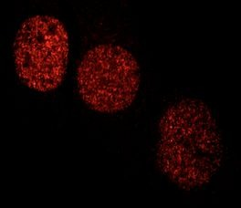
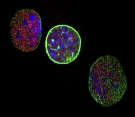
2STED super-resolution
A confocal microscope blurs together objects closer than about 200 nm, so a real contact could hide in the blur. STED imaging of the same nuclei resolves EZH2 into distinct specks, and the enzyme still spreads through the nucleus instead of gathering at the rim. Limited resolution does not explain why the proteins looked apart.
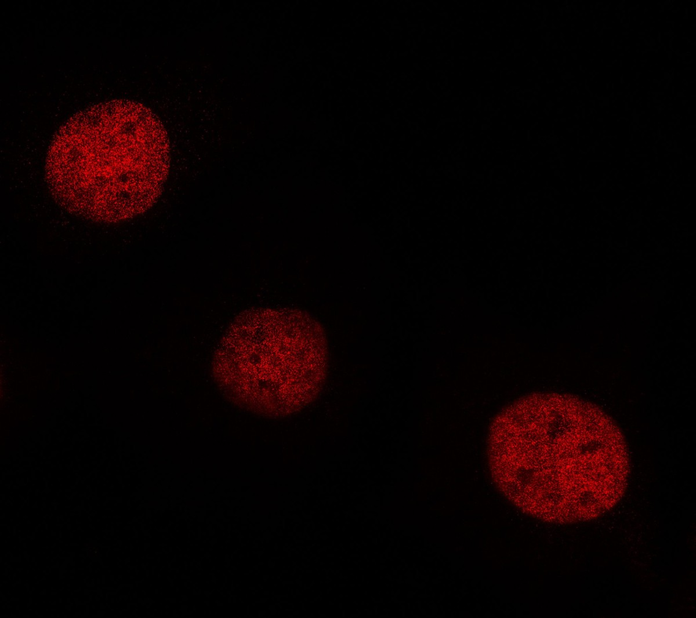
Confocal STEDClose-ups of the boxed region at the edge of the top-left nucleus. STED separates signal that confocal smears into soft blobs.
3Co-immunoprecipitation
An emerin antibody pulled emerin out of HeLa and C2C12 cell extracts, and emerin shows up in the bound lanes. EZH2 and G9a appear only in the input and unbound lanes, so both enzymes were present in the cells and stayed behind when emerin was captured. The pattern held at 0, 24 and 48 hours of C2C12 differentiation.
Next step
Förster resonance energy transfer works like a molecular ruler. Emerin and an enzyme are each tagged with a fluorescent protein, CFP or YFP. Light at 430 nm excites CFP, which glows cyan at 475 nm. If the two proteins come within 1 to 10 nm of each other, CFP passes its energy to YFP, which then glows yellow-green at 525 nm.
Because FRET can be measured in living cells in real time, it can register contacts that last only moments.
Image gallery
Each field is shown channel by channel and merged. Compare the start of differentiation with 48 hours later, and confocal with STED.
C2C12 cells at the start of differentiation, stained for emerin and EZH2. This field also appears in Results 1 and 2.
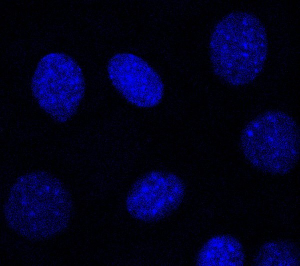
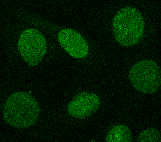
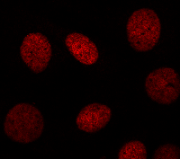
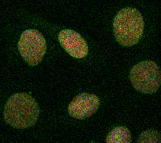
C2C12 cells after 48 hours of differentiation, stained for emerin and EZH2.
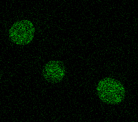
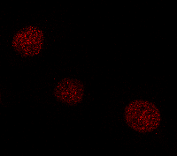
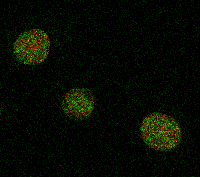
The 0 h field imaged by STED super-resolution microscopy.
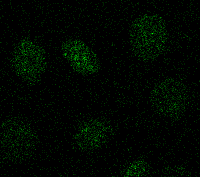
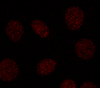
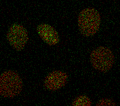
The 48 h field imaged by STED super-resolution microscopy.
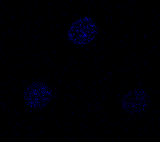
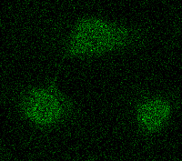
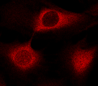
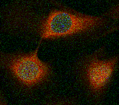
C2C12 cells at 0 h, stained for emerin and G9a.
Poster
Select the poster to open it at full size, then select again to zoom in. You can also download the original PDF.
Sources
Sincere thanks to Dr. James M. Holaska, Richard Condon, Christal Rolling, Emily Hansen, Dr. Vega and Myranda Sims, and to Cooper Medical School of Rowan University, the Rowan-Virtua School of Translational Biomedical Engineering and Sciences, and the National Institutes of Health.